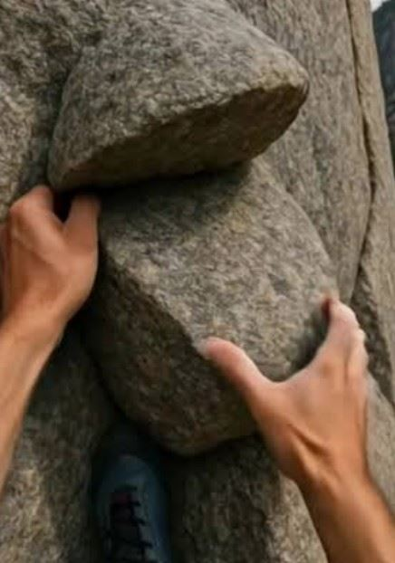

Following the map, Patricia guided her kayak deeper into the subterranean dark, following the eerie green light that pulsed from further within the cave. Each stroke of her paddle made loud, wet splashes that ricocheted sharply around the stone chambers, echoing back to remind her just how vastly empty and isolating this underworld truly was. Looking up at the ancient, weeping stone walls, a sudden wave of loneliness washed over her. The sheer scale of the cavern made her feel microscopic, forcing her thoughts back to the true purpose of her perilous journey: her missing uncle. She desperately needed to find him, and that fierce determination was the only thing keeping her fear at bay. Up ahead, the narrow tunnel suddenly gave way to a breathtakingly large cavern, its colossal walls looming high into the darkness and glowing with a brilliant, natural phosphorescence. But as she drew closer, she noticed the path split: the main body of water continued toward the glowing chamber, while a smaller, shadow-drenched river cut sharply off to the side, disappearing into the unknown.


| Continue In Canoe | Climb Up Rock Face |